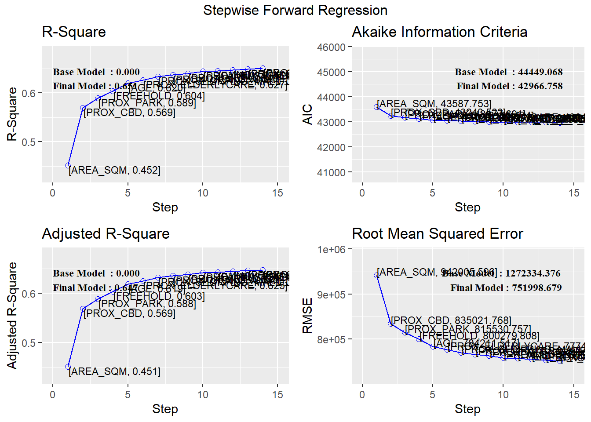
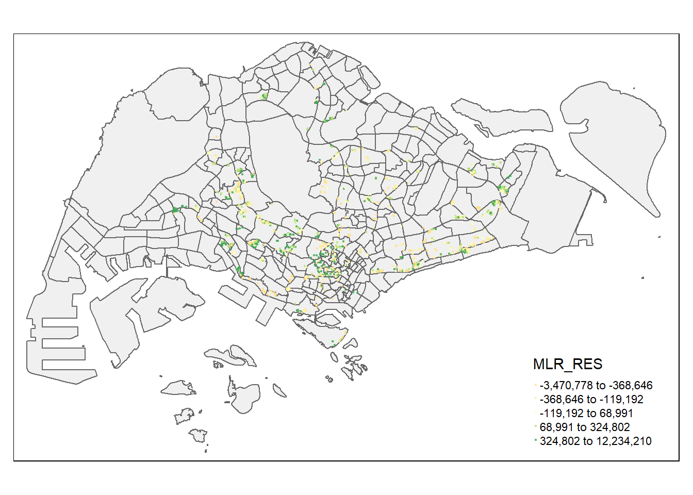

pacman::p_load(olsrr, corrplot, performance, ggpubr, sf, spdep, sfdep, GWmodel, tmap, tidyverse, glue, gtsummary, ggstatsplot)In-Class Exercise 07
mpsz = st_read(dsn = "data/geospatial", layer = "MP14_SUBZONE_WEB_PL")Reading layer `MP14_SUBZONE_WEB_PL' from data source
`C:\BlumeTechnologies\ISSS626\ISSS626\In-Class_Exercises\In-Class_Exersice07\data\geospatial'
using driver `ESRI Shapefile'
Simple feature collection with 323 features and 15 fields
Geometry type: MULTIPOLYGON
Dimension: XY
Bounding box: xmin: 2667.538 ymin: 15748.72 xmax: 56396.44 ymax: 50256.33
Projected CRS: SVY21mpsz_svy21 <- st_transform(mpsz, 3414)condo_resale = read_csv("data/aspatial/Condo_resale_2015.csv")Rows: 1436 Columns: 23
── Column specification ────────────────────────────────────────────────────────
Delimiter: ","
dbl (23): LATITUDE, LONGITUDE, POSTCODE, SELLING_PRICE, AREA_SQM, AGE, PROX_...
ℹ Use `spec()` to retrieve the full column specification for this data.
ℹ Specify the column types or set `show_col_types = FALSE` to quiet this message.glimpse(condo_resale)Rows: 1,436
Columns: 23
$ LATITUDE <dbl> 1.287145, 1.328698, 1.313727, 1.308563, 1.321437,…
$ LONGITUDE <dbl> 103.7802, 103.8123, 103.7971, 103.8247, 103.9505,…
$ POSTCODE <dbl> 118635, 288420, 267833, 258380, 467169, 466472, 3…
$ SELLING_PRICE <dbl> 3000000, 3880000, 3325000, 4250000, 1400000, 1320…
$ AREA_SQM <dbl> 309, 290, 248, 127, 145, 139, 218, 141, 165, 168,…
$ AGE <dbl> 30, 32, 33, 7, 28, 22, 24, 24, 27, 31, 17, 22, 6,…
$ PROX_CBD <dbl> 7.941259, 6.609797, 6.898000, 4.038861, 11.783402…
$ PROX_CHILDCARE <dbl> 0.16597932, 0.28027246, 0.42922669, 0.39473543, 0…
$ PROX_ELDERLYCARE <dbl> 2.5198118, 1.9333338, 0.5021395, 1.9910316, 1.121…
$ PROX_URA_GROWTH_AREA <dbl> 6.618741, 7.505109, 6.463887, 4.906512, 6.410632,…
$ PROX_HAWKER_MARKET <dbl> 1.76542207, 0.54507614, 0.37789301, 1.68259969, 0…
$ PROX_KINDERGARTEN <dbl> 0.05835552, 0.61592412, 0.14120309, 0.38200076, 0…
$ PROX_MRT <dbl> 0.5607188, 0.6584461, 0.3053433, 0.6910183, 0.528…
$ PROX_PARK <dbl> 1.1710446, 0.1992269, 0.2779886, 0.9832843, 0.116…
$ PROX_PRIMARY_SCH <dbl> 1.6340256, 0.9747834, 1.4715016, 1.4546324, 0.709…
$ PROX_TOP_PRIMARY_SCH <dbl> 3.3273195, 0.9747834, 1.4715016, 2.3006394, 0.709…
$ PROX_SHOPPING_MALL <dbl> 2.2102717, 2.9374279, 1.2256850, 0.3525671, 1.307…
$ PROX_SUPERMARKET <dbl> 0.9103958, 0.5900617, 0.4135583, 0.4162219, 0.581…
$ PROX_BUS_STOP <dbl> 0.10336166, 0.28673408, 0.28504777, 0.29872340, 0…
$ NO_Of_UNITS <dbl> 18, 20, 27, 30, 30, 31, 32, 32, 32, 32, 34, 34, 3…
$ FAMILY_FRIENDLY <dbl> 0, 0, 0, 0, 0, 1, 1, 0, 1, 1, 0, 0, 0, 0, 0, 0, 0…
$ FREEHOLD <dbl> 1, 1, 1, 1, 1, 1, 1, 1, 1, 0, 1, 1, 1, 1, 1, 1, 1…
$ LEASEHOLD_99YR <dbl> 0, 0, 0, 0, 0, 0, 0, 0, 0, 0, 0, 0, 0, 0, 0, 0, 0…condo_resale.sf <- st_as_sf(condo_resale,
coords = c("LONGITUDE", "LATITUDE"),
crs=4326) %>%
st_transform(crs=3414)To turn multi into single poly
TMSHAPE
sf_polygon = prov_sf
st(cast (polygon
mutate area = st_area(.))
prov_vleaned = sfpolygon
groupby province
filter area == max(area
ungroup()
select(-area)
select(province)
corrplot(cor(condo_resale[, 5:23]), diag = FALSE, order = "AOE",
tl.pos = "td", tl.cex = 0.5, method = "number", type = "upper")ggcorrmat(condo_resale[, 5:23])condo.mlr <- lm(formula = SELLING_PRICE ~ AREA_SQM + AGE +
PROX_CBD + PROX_CHILDCARE + PROX_ELDERLYCARE +
PROX_URA_GROWTH_AREA + PROX_MRT + PROX_PARK +
PROX_PRIMARY_SCH + PROX_SHOPPING_MALL + PROX_BUS_STOP +
NO_Of_UNITS + FAMILY_FRIENDLY + FREEHOLD + LEASEHOLD_99YR,
data=condo_resale.sf)
ols_regress(condo.mlr) Model Summary
-----------------------------------------------------------------------------
R 0.807 RMSE 751634.509
R-Squared 0.651 MSE 571320119490.610
Adj. R-Squared 0.647 Coef. Var 43.162
Pred R-Squared 0.637 AIC 42967.367
MAE 413020.461 SBC 43056.951
-----------------------------------------------------------------------------
RMSE: Root Mean Square Error
MSE: Mean Square Error
MAE: Mean Absolute Error
AIC: Akaike Information Criteria
SBC: Schwarz Bayesian Criteria
ANOVA
--------------------------------------------------------------------------------
Sum of
Squares DF Mean Square F Sig.
--------------------------------------------------------------------------------
Regression 1.513372e+15 15 1.008915e+14 176.594 0.0000
Residual 8.112746e+14 1420 571320119490.610
Total 2.324647e+15 1435
--------------------------------------------------------------------------------
Parameter Estimates
-----------------------------------------------------------------------------------------------------------------
model Beta Std. Error Std. Beta t Sig lower upper
-----------------------------------------------------------------------------------------------------------------
(Intercept) 591539.643 121110.937 4.884 0.000 353964.068 829115.218
AREA_SQM 12754.325 367.962 0.582 34.662 0.000 12032.517 13476.133
AGE -24822.087 2756.860 -0.168 -9.004 0.000 -30230.043 -19414.132
PROX_CBD -76833.361 5767.956 -0.262 -13.321 0.000 -88147.991 -65518.730
PROX_CHILDCARE -297608.214 109400.497 -0.078 -2.720 0.007 -512212.168 -83004.261
PROX_ELDERLYCARE 183303.549 39943.561 0.089 4.589 0.000 104948.823 261658.276
PROX_URA_GROWTH_AREA 39752.039 11763.983 0.061 3.379 0.001 16675.385 62828.692
PROX_MRT -305114.878 57591.189 -0.116 -5.298 0.000 -418087.828 -192141.927
PROX_PARK 572038.799 65511.407 0.150 8.732 0.000 443529.265 700548.334
PROX_PRIMARY_SCH 164542.899 60358.977 0.064 2.726 0.006 46140.557 282945.241
PROX_SHOPPING_MALL -220515.279 36558.846 -0.115 -6.032 0.000 -292230.427 -148800.131
PROX_BUS_STOP 674997.951 134646.651 0.133 5.013 0.000 410870.234 939125.668
NO_Of_UNITS -228.616 89.102 -0.049 -2.566 0.010 -403.402 -53.830
FAMILY_FRIENDLY 148152.863 46913.189 0.058 3.158 0.002 56126.263 240179.463
FREEHOLD 281136.713 76537.974 0.109 3.673 0.000 130997.067 431276.358
LEASEHOLD_99YR -89655.454 76421.659 -0.035 -1.173 0.241 -239566.931 60256.022
-----------------------------------------------------------------------------------------------------------------EXCLUDE STATISTICLAYY INSIGNIFICANT IN RESUTLS
Sign <0.5
VIF between 0 and 5 no problem
above 5 meh
above 10 no go
ols_vif_tol(condo.mlr) Variables Tolerance VIF
1 AREA_SQM 0.8703348 1.148983
2 AGE 0.7059074 1.416616
3 PROX_CBD 0.6343823 1.576337
4 PROX_CHILDCARE 0.2984991 3.350094
5 PROX_ELDERLYCARE 0.6582967 1.519072
6 PROX_URA_GROWTH_AREA 0.7496642 1.333931
7 PROX_MRT 0.5112747 1.955896
8 PROX_PARK 0.8275963 1.208319
9 PROX_PRIMARY_SCH 0.4504807 2.219851
10 PROX_SHOPPING_MALL 0.6738111 1.484095
11 PROX_BUS_STOP 0.3506229 2.852067
12 NO_Of_UNITS 0.6721417 1.487781
13 FAMILY_FRIENDLY 0.7236014 1.381976
14 FREEHOLD 0.2783151 3.593049
15 LEASEHOLD_99YR 0.2726438 3.667789variable selection
condo_fw_mlr = ols_step_forward_p(
condo.mlr,
p_val = 0.05,
details = TRUE
)Forward Selection Method
------------------------
Candidate Terms:
1. AREA_SQM
2. AGE
3. PROX_CBD
4. PROX_CHILDCARE
5. PROX_ELDERLYCARE
6. PROX_URA_GROWTH_AREA
7. PROX_MRT
8. PROX_PARK
9. PROX_PRIMARY_SCH
10. PROX_SHOPPING_MALL
11. PROX_BUS_STOP
12. NO_Of_UNITS
13. FAMILY_FRIENDLY
14. FREEHOLD
15. LEASEHOLD_99YR
Step => 0
Model => SELLING_PRICE ~ 1
R2 => 0
Initiating stepwise selection...
Selection Metrics Table
----------------------------------------------------------------------------
Predictor Pr(>|t|) R-Squared Adj. R-Squared AIC
----------------------------------------------------------------------------
AREA_SQM 0.00000 0.452 0.451 43587.753
PROX_CBD 0.00000 0.243 0.242 44051.772
FREEHOLD 0.00000 0.082 0.081 44328.539
LEASEHOLD_99YR 0.00000 0.066 0.065 44353.172
PROX_PARK 0.00000 0.049 0.048 44378.817
NO_Of_UNITS 0.00000 0.048 0.048 44380.124
PROX_PRIMARY_SCH 0.00000 0.032 0.032 44403.847
PROX_CHILDCARE 0.00000 0.021 0.021 44420.298
PROX_ELDERLYCARE 0.00000 0.021 0.020 44420.546
PROX_BUS_STOP 0.00000 0.021 0.020 44420.742
PROX_SHOPPING_MALL 0.00154 0.007 0.006 44441.023
FAMILY_FRIENDLY 0.00907 0.005 0.004 44444.248
PROX_MRT 0.01071 0.005 0.004 44444.545
PROX_URA_GROWTH_AREA 0.13510 0.002 0.001 44448.832
AGE 0.52978 0.000 0.000 44450.673
----------------------------------------------------------------------------
Step => 1
Selected => AREA_SQM
Model => SELLING_PRICE ~ AREA_SQM
R2 => 0.452
Selection Metrics Table
----------------------------------------------------------------------------
Predictor Pr(>|t|) R-Squared Adj. R-Squared AIC
----------------------------------------------------------------------------
PROX_CBD 0.00000 0.569 0.569 43243.523
FREEHOLD 0.00000 0.487 0.487 43493.627
PROX_PARK 0.00000 0.478 0.478 43518.542
LEASEHOLD_99YR 0.00000 0.475 0.474 43527.150
AGE 0.00000 0.471 0.470 43538.063
PROX_SHOPPING_MALL 0.00000 0.467 0.466 43549.216
PROX_MRT 0.00000 0.465 0.464 43556.097
NO_Of_UNITS 0.00000 0.464 0.463 43557.089
PROX_PRIMARY_SCH 3e-05 0.458 0.458 43572.418
PROX_ELDERLYCARE 5e-05 0.458 0.457 43573.203
PROX_URA_GROWTH_AREA 9e-05 0.458 0.457 43574.292
FAMILY_FRIENDLY 0.00026 0.457 0.456 43576.392
PROX_CHILDCARE 0.00275 0.455 0.455 43580.768
PROX_BUS_STOP 0.00381 0.455 0.454 43581.362
----------------------------------------------------------------------------
Step => 2
Selected => PROX_CBD
Model => SELLING_PRICE ~ AREA_SQM + PROX_CBD
R2 => 0.569
Selection Metrics Table
----------------------------------------------------------------------------
Predictor Pr(>|t|) R-Squared Adj. R-Squared AIC
----------------------------------------------------------------------------
PROX_PARK 0.00000 0.589 0.588 43177.691
AGE 0.00000 0.586 0.585 43188.935
FREEHOLD 0.00000 0.579 0.578 43213.005
PROX_ELDERLYCARE 0.00000 0.578 0.577 43216.850
LEASEHOLD_99YR 0.00000 0.576 0.575 43224.500
PROX_SHOPPING_MALL 8e-05 0.574 0.573 43229.948
PROX_MRT 0.00613 0.572 0.571 43237.989
NO_Of_UNITS 0.01059 0.571 0.570 43238.970
PROX_PRIMARY_SCH 0.04530 0.570 0.570 43241.503
PROX_BUS_STOP 0.06634 0.570 0.569 43242.142
FAMILY_FRIENDLY 0.11212 0.570 0.569 43242.991
PROX_CHILDCARE 0.29768 0.570 0.569 43244.435
PROX_URA_GROWTH_AREA 0.78658 0.569 0.568 43245.450
----------------------------------------------------------------------------
Step => 3
Selected => PROX_PARK
Model => SELLING_PRICE ~ AREA_SQM + PROX_CBD + PROX_PARK
R2 => 0.589
Selection Metrics Table
----------------------------------------------------------------------------
Predictor Pr(>|t|) R-Squared Adj. R-Squared AIC
----------------------------------------------------------------------------
FREEHOLD 0.00000 0.604 0.603 43125.474
AGE 0.00000 0.602 0.601 43132.534
LEASEHOLD_99YR 0.00000 0.601 0.600 43138.902
PROX_ELDERLYCARE 0.00000 0.596 0.595 43153.932
NO_Of_UNITS 0.00013 0.593 0.592 43164.977
PROX_SHOPPING_MALL 0.00015 0.593 0.592 43165.286
PROX_MRT 0.00250 0.592 0.591 43170.516
FAMILY_FRIENDLY 0.02445 0.591 0.589 43174.609
PROX_URA_GROWTH_AREA 0.14518 0.590 0.589 43177.560
PROX_CHILDCARE 0.31093 0.589 0.588 43178.660
PROX_PRIMARY_SCH 0.34515 0.589 0.588 43178.796
PROX_BUS_STOP 0.47898 0.589 0.588 43179.188
----------------------------------------------------------------------------
Step => 4
Selected => FREEHOLD
Model => SELLING_PRICE ~ AREA_SQM + PROX_CBD + PROX_PARK + FREEHOLD
R2 => 0.604
Selection Metrics Table
----------------------------------------------------------------------------
Predictor Pr(>|t|) R-Squared Adj. R-Squared AIC
----------------------------------------------------------------------------
AGE 0.00000 0.620 0.619 43069.222
PROX_SHOPPING_MALL 0.00000 0.611 0.609 43104.195
PROX_ELDERLYCARE 5e-05 0.609 0.608 43111.036
PROX_MRT 0.00345 0.607 0.605 43118.882
PROX_BUS_STOP 0.09204 0.605 0.604 43124.623
FAMILY_FRIENDLY 0.11599 0.605 0.604 43124.992
PROX_PRIMARY_SCH 0.21752 0.605 0.603 43125.946
NO_Of_UNITS 0.25242 0.605 0.603 43126.158
PROX_URA_GROWTH_AREA 0.27640 0.605 0.603 43126.284
LEASEHOLD_99YR 0.49846 0.605 0.603 43127.014
PROX_CHILDCARE 0.82289 0.604 0.603 43127.424
----------------------------------------------------------------------------
Step => 5
Selected => AGE
Model => SELLING_PRICE ~ AREA_SQM + PROX_CBD + PROX_PARK + FREEHOLD + AGE
R2 => 0.62
Selection Metrics Table
----------------------------------------------------------------------------
Predictor Pr(>|t|) R-Squared Adj. R-Squared AIC
----------------------------------------------------------------------------
PROX_ELDERLYCARE 0.00000 0.627 0.625 43046.515
PROX_SHOPPING_MALL 0.00014 0.624 0.622 43056.710
PROX_MRT 0.00118 0.623 0.621 43060.651
NO_Of_UNITS 0.03614 0.621 0.620 43066.808
PROX_PRIMARY_SCH 0.04454 0.621 0.620 43067.165
PROX_URA_GROWTH_AREA 0.05538 0.621 0.619 43067.532
FAMILY_FRIENDLY 0.06368 0.621 0.619 43067.765
PROX_BUS_STOP 0.09258 0.621 0.619 43068.378
LEASEHOLD_99YR 0.33191 0.620 0.619 43070.276
PROX_CHILDCARE 0.76117 0.620 0.619 43071.129
----------------------------------------------------------------------------
Step => 6
Selected => PROX_ELDERLYCARE
Model => SELLING_PRICE ~ AREA_SQM + PROX_CBD + PROX_PARK + FREEHOLD + AGE + PROX_ELDERLYCARE
R2 => 0.627
Selection Metrics Table
----------------------------------------------------------------------------
Predictor Pr(>|t|) R-Squared Adj. R-Squared AIC
----------------------------------------------------------------------------
PROX_SHOPPING_MALL 0.00000 0.634 0.632 43020.990
PROX_MRT 0.00000 0.633 0.631 43024.733
PROX_CHILDCARE 0.00320 0.629 0.627 43039.776
FAMILY_FRIENDLY 0.04001 0.628 0.626 43044.273
PROX_URA_GROWTH_AREA 0.06111 0.628 0.626 43044.987
NO_Of_UNITS 0.21750 0.627 0.625 43046.985
LEASEHOLD_99YR 0.33225 0.627 0.625 43047.569
PROX_PRIMARY_SCH 0.72554 0.627 0.625 43048.391
PROX_BUS_STOP 0.73834 0.627 0.625 43048.403
----------------------------------------------------------------------------
Step => 7
Selected => PROX_SHOPPING_MALL
Model => SELLING_PRICE ~ AREA_SQM + PROX_CBD + PROX_PARK + FREEHOLD + AGE + PROX_ELDERLYCARE + PROX_SHOPPING_MALL
R2 => 0.634
Selection Metrics Table
----------------------------------------------------------------------------
Predictor Pr(>|t|) R-Squared Adj. R-Squared AIC
----------------------------------------------------------------------------
PROX_URA_GROWTH_AREA 2e-04 0.637 0.635 43009.092
PROX_MRT 0.00038 0.637 0.635 43010.278
FAMILY_FRIENDLY 0.09004 0.634 0.632 43020.098
NO_Of_UNITS 0.09561 0.634 0.632 43020.195
PROX_BUS_STOP 0.10105 0.634 0.632 43020.284
PROX_CHILDCARE 0.16782 0.634 0.632 43021.075
PROX_PRIMARY_SCH 0.20169 0.634 0.632 43021.349
LEASEHOLD_99YR 0.41342 0.634 0.632 43022.317
----------------------------------------------------------------------------
Step => 8
Selected => PROX_URA_GROWTH_AREA
Model => SELLING_PRICE ~ AREA_SQM + PROX_CBD + PROX_PARK + FREEHOLD + AGE + PROX_ELDERLYCARE + PROX_SHOPPING_MALL + PROX_URA_GROWTH_AREA
R2 => 0.637
Selection Metrics Table
------------------------------------------------------------------------
Predictor Pr(>|t|) R-Squared Adj. R-Squared AIC
------------------------------------------------------------------------
PROX_MRT 0.00055 0.640 0.638 42999.058
NO_Of_UNITS 0.04357 0.638 0.636 43006.989
PROX_BUS_STOP 0.07301 0.638 0.636 43007.854
FAMILY_FRIENDLY 0.07751 0.638 0.636 43007.953
PROX_CHILDCARE 0.17683 0.638 0.635 43009.255
LEASEHOLD_99YR 0.26341 0.638 0.635 43009.832
PROX_PRIMARY_SCH 0.60814 0.637 0.635 43010.827
------------------------------------------------------------------------
Step => 9
Selected => PROX_MRT
Model => SELLING_PRICE ~ AREA_SQM + PROX_CBD + PROX_PARK + FREEHOLD + AGE + PROX_ELDERLYCARE + PROX_SHOPPING_MALL + PROX_URA_GROWTH_AREA + PROX_MRT
R2 => 0.64
Selection Metrics Table
------------------------------------------------------------------------
Predictor Pr(>|t|) R-Squared Adj. R-Squared AIC
------------------------------------------------------------------------
PROX_BUS_STOP 6e-05 0.644 0.642 42984.951
PROX_PRIMARY_SCH 0.01738 0.642 0.639 42995.355
NO_Of_UNITS 0.04105 0.641 0.639 42996.851
FAMILY_FRIENDLY 0.06468 0.641 0.639 42997.618
LEASEHOLD_99YR 0.16895 0.641 0.638 42999.151
PROX_CHILDCARE 0.71809 0.640 0.638 43000.927
------------------------------------------------------------------------
Step => 10
Selected => PROX_BUS_STOP
Model => SELLING_PRICE ~ AREA_SQM + PROX_CBD + PROX_PARK + FREEHOLD + AGE + PROX_ELDERLYCARE + PROX_SHOPPING_MALL + PROX_URA_GROWTH_AREA + PROX_MRT + PROX_BUS_STOP
R2 => 0.644
Selection Metrics Table
------------------------------------------------------------------------
Predictor Pr(>|t|) R-Squared Adj. R-Squared AIC
------------------------------------------------------------------------
FAMILY_FRIENDLY 0.01590 0.646 0.643 42981.085
PROX_CHILDCARE 0.02032 0.646 0.643 42981.519
NO_Of_UNITS 0.03658 0.645 0.643 42982.543
PROX_PRIMARY_SCH 0.06688 0.645 0.642 42983.563
LEASEHOLD_99YR 0.10015 0.645 0.642 42984.224
------------------------------------------------------------------------
Step => 11
Selected => FAMILY_FRIENDLY
Model => SELLING_PRICE ~ AREA_SQM + PROX_CBD + PROX_PARK + FREEHOLD + AGE + PROX_ELDERLYCARE + PROX_SHOPPING_MALL + PROX_URA_GROWTH_AREA + PROX_MRT + PROX_BUS_STOP + FAMILY_FRIENDLY
R2 => 0.646
Selection Metrics Table
------------------------------------------------------------------------
Predictor Pr(>|t|) R-Squared Adj. R-Squared AIC
------------------------------------------------------------------------
NO_Of_UNITS 0.00533 0.648 0.645 42975.246
PROX_CHILDCARE 0.01908 0.647 0.644 42977.539
PROX_PRIMARY_SCH 0.06018 0.647 0.644 42979.519
LEASEHOLD_99YR 0.06704 0.647 0.644 42979.699
------------------------------------------------------------------------
Step => 12
Selected => NO_Of_UNITS
Model => SELLING_PRICE ~ AREA_SQM + PROX_CBD + PROX_PARK + FREEHOLD + AGE + PROX_ELDERLYCARE + PROX_SHOPPING_MALL + PROX_URA_GROWTH_AREA + PROX_MRT + PROX_BUS_STOP + FAMILY_FRIENDLY + NO_Of_UNITS
R2 => 0.648
Selection Metrics Table
------------------------------------------------------------------------
Predictor Pr(>|t|) R-Squared Adj. R-Squared AIC
------------------------------------------------------------------------
PROX_CHILDCARE 0.02092 0.649 0.646 42971.858
PROX_PRIMARY_SCH 0.05496 0.649 0.645 42973.525
LEASEHOLD_99YR 0.16053 0.648 0.645 42975.257
------------------------------------------------------------------------
Step => 13
Selected => PROX_CHILDCARE
Model => SELLING_PRICE ~ AREA_SQM + PROX_CBD + PROX_PARK + FREEHOLD + AGE + PROX_ELDERLYCARE + PROX_SHOPPING_MALL + PROX_URA_GROWTH_AREA + PROX_MRT + PROX_BUS_STOP + FAMILY_FRIENDLY + NO_Of_UNITS + PROX_CHILDCARE
R2 => 0.649
Selection Metrics Table
------------------------------------------------------------------------
Predictor Pr(>|t|) R-Squared Adj. R-Squared AIC
------------------------------------------------------------------------
PROX_PRIMARY_SCH 0.00805 0.651 0.647 42966.758
LEASEHOLD_99YR 0.32104 0.649 0.646 42972.863
------------------------------------------------------------------------
Step => 14
Selected => PROX_PRIMARY_SCH
Model => SELLING_PRICE ~ AREA_SQM + PROX_CBD + PROX_PARK + FREEHOLD + AGE + PROX_ELDERLYCARE + PROX_SHOPPING_MALL + PROX_URA_GROWTH_AREA + PROX_MRT + PROX_BUS_STOP + FAMILY_FRIENDLY + NO_Of_UNITS + PROX_CHILDCARE + PROX_PRIMARY_SCH
R2 => 0.651
Selection Metrics Table
----------------------------------------------------------------------
Predictor Pr(>|t|) R-Squared Adj. R-Squared AIC
----------------------------------------------------------------------
LEASEHOLD_99YR 0.24093 0.651 0.647 42967.367
----------------------------------------------------------------------
No more variables to be added.
Variables Selected:
=> AREA_SQM
=> PROX_CBD
=> PROX_PARK
=> FREEHOLD
=> AGE
=> PROX_ELDERLYCARE
=> PROX_SHOPPING_MALL
=> PROX_URA_GROWTH_AREA
=> PROX_MRT
=> PROX_BUS_STOP
=> FAMILY_FRIENDLY
=> NO_Of_UNITS
=> PROX_CHILDCARE
=> PROX_PRIMARY_SCH plot(condo_fw_mlr)
ols_plot_resid_fit(condo_fw_mlr$model)ols_plot_resid_hist(condo_fw_mlr$model)
ols_test_normality(condo_fw_mlr$model)Warning in ks.test.default(y, "pnorm", mean(y), sd(y)): ties should not be
present for the one-sample Kolmogorov-Smirnov test-----------------------------------------------
Test Statistic pvalue
-----------------------------------------------
Shapiro-Wilk 0.6856 0.0000
Kolmogorov-Smirnov 0.1366 0.0000
Cramer-von Mises 121.0768 0.0000
Anderson-Darling 67.9551 0.0000
-----------------------------------------------mlr_output = as.data.frame(condo_fw_mlr$model$residuals)%>%
rename('FW_MLR_RES' = 'condo_fw_mlr$model$residuals')condo_resale_sf = cbind(condo_resale.sf,
mlr_output$FW_MLR_RES) %>%
rename('MLR_RES' = 'mlr_output.FW_MLR_RES')tmap_mode("plot")tmap mode set to plottingtmap_options(check.and.fix = TRUE)
tm_shape(mpsz)+
tmap_options(check.and.fix = TRUE) +
tm_polygons(alpha = 0.4) +
tm_shape(condo_resale_sf) +
tm_dots(col = "MLR_RES",
alpha = 0.6,
style = "quantile")Warning: The shape mpsz is invalid. See sf::st_is_validVariable(s) "MLR_RES" contains positive and negative values, so midpoint is set to 0. Set midpoint = NA to show the full spectrum of the color palette.
tmap_mode("plot")tmap mode set to plottingcondo_resale_sf = condo_resale_sf %>%
mutate(nb = st_knn(geometry, k=6,
longlat = FALSE),
wt = st_weights(nb,
style = "W"),
.before = 1)global_moran_perm(condo_resale_sf$MLR_RES,
condo_resale_sf$nb,
condo_resale_sf$wt,
alternative = "two.sided",
nsim = 99)
Monte-Carlo simulation of Moran I
data: x
weights: listw
number of simulations + 1: 100
statistic = 0.32254, observed rank = 100, p-value < 2.2e-16
alternative hypothesis: two.sidedNull hypothesis that its random is rejected so there is clustering
bw_fixed = bw.gwr(formula = SELLING_PRICE ~ AREA_SQM + AGE + PROX_CBD + PROX_CHILDCARE + PROX_ELDERLYCARE + PROX_URA_GROWTH_AREA + PROX_MRT + PROX_PARK + PROX_PRIMARY_SCH + PROX_SHOPPING_MALL + PROX_BUS_STOP + NO_Of_UNITS + FAMILY_FRIENDLY + FREEHOLD,
data=condo_resale_sf,
approach = "CV",
kernel = "gaussian",
adaptive = FALSE,
longlat = FALSE)Fixed bandwidth: 17660.96 CV score: 8.259118e+14
Fixed bandwidth: 10917.26 CV score: 7.970454e+14
Fixed bandwidth: 6749.419 CV score: 7.273273e+14
Fixed bandwidth: 4173.553 CV score: 6.300006e+14
Fixed bandwidth: 2581.58 CV score: 5.404958e+14
Fixed bandwidth: 1597.687 CV score: 4.857515e+14
Fixed bandwidth: 989.6077 CV score: 4.722431e+14
Fixed bandwidth: 613.7939 CV score: 1.378294e+16
Fixed bandwidth: 1221.873 CV score: 4.778717e+14
Fixed bandwidth: 846.0596 CV score: 4.791629e+14
Fixed bandwidth: 1078.325 CV score: 4.751406e+14
Fixed bandwidth: 934.7772 CV score: 4.72518e+14
Fixed bandwidth: 1023.495 CV score: 4.730305e+14
Fixed bandwidth: 968.6643 CV score: 4.721317e+14
Fixed bandwidth: 955.7206 CV score: 4.722072e+14
Fixed bandwidth: 976.6639 CV score: 4.721387e+14
Fixed bandwidth: 963.7202 CV score: 4.721484e+14
Fixed bandwidth: 971.7199 CV score: 4.721293e+14
Fixed bandwidth: 973.6083 CV score: 4.721309e+14
Fixed bandwidth: 970.5527 CV score: 4.721295e+14
Fixed bandwidth: 972.4412 CV score: 4.721296e+14
Fixed bandwidth: 971.2741 CV score: 4.721292e+14
Fixed bandwidth: 970.9985 CV score: 4.721293e+14
Fixed bandwidth: 971.4443 CV score: 4.721292e+14
Fixed bandwidth: 971.5496 CV score: 4.721293e+14
Fixed bandwidth: 971.3793 CV score: 4.721292e+14
Fixed bandwidth: 971.3391 CV score: 4.721292e+14
Fixed bandwidth: 971.3143 CV score: 4.721292e+14
Fixed bandwidth: 971.3545 CV score: 4.721292e+14
Fixed bandwidth: 971.3296 CV score: 4.721292e+14
Fixed bandwidth: 971.345 CV score: 4.721292e+14
Fixed bandwidth: 971.3355 CV score: 4.721292e+14
Fixed bandwidth: 971.3413 CV score: 4.721292e+14
Fixed bandwidth: 971.3377 CV score: 4.721292e+14
Fixed bandwidth: 971.34 CV score: 4.721292e+14
Fixed bandwidth: 971.3405 CV score: 4.721292e+14
Fixed bandwidth: 971.3408 CV score: 4.721292e+14
Fixed bandwidth: 971.3403 CV score: 4.721292e+14
Fixed bandwidth: 971.3406 CV score: 4.721292e+14
Fixed bandwidth: 971.3404 CV score: 4.721292e+14
Fixed bandwidth: 971.3405 CV score: 4.721292e+14
Fixed bandwidth: 971.3405 CV score: 4.721292e+14 use the bandwith in the calibration
gwr_fixed = gwr.basic(formula = SELLING_PRICE ~ AREA_SQM + AGE + PROX_CBD + PROX_CHILDCARE + PROX_ELDERLYCARE + PROX_URA_GROWTH_AREA + PROX_MRT + PROX_PARK + PROX_PRIMARY_SCH + PROX_SHOPPING_MALL + PROX_BUS_STOP + NO_Of_UNITS + FAMILY_FRIENDLY + FREEHOLD,
data=condo_resale_sf,
bw=bw_fixed,
kernel = "gaussian",
longlat = FALSE)gwr_fixed ***********************************************************************
* Package GWmodel *
***********************************************************************
Program starts at: 2024-10-14 22:34:50.086652
Call:
gwr.basic(formula = SELLING_PRICE ~ AREA_SQM + AGE + PROX_CBD +
PROX_CHILDCARE + PROX_ELDERLYCARE + PROX_URA_GROWTH_AREA +
PROX_MRT + PROX_PARK + PROX_PRIMARY_SCH + PROX_SHOPPING_MALL +
PROX_BUS_STOP + NO_Of_UNITS + FAMILY_FRIENDLY + FREEHOLD,
data = condo_resale_sf, bw = bw_fixed, kernel = "gaussian",
longlat = FALSE)
Dependent (y) variable: SELLING_PRICE
Independent variables: AREA_SQM AGE PROX_CBD PROX_CHILDCARE PROX_ELDERLYCARE PROX_URA_GROWTH_AREA PROX_MRT PROX_PARK PROX_PRIMARY_SCH PROX_SHOPPING_MALL PROX_BUS_STOP NO_Of_UNITS FAMILY_FRIENDLY FREEHOLD
Number of data points: 1436
***********************************************************************
* Results of Global Regression *
***********************************************************************
Call:
lm(formula = formula, data = data)
Residuals:
Min 1Q Median 3Q Max
-3470778 -298119 -23481 248917 12234210
Coefficients:
Estimate Std. Error t value Pr(>|t|)
(Intercept) 527633.22 108183.22 4.877 1.20e-06 ***
AREA_SQM 12777.52 367.48 34.771 < 2e-16 ***
AGE -24687.74 2754.84 -8.962 < 2e-16 ***
PROX_CBD -77131.32 5763.12 -13.384 < 2e-16 ***
PROX_CHILDCARE -318472.75 107959.51 -2.950 0.003231 **
PROX_ELDERLYCARE 185575.62 39901.86 4.651 3.61e-06 ***
PROX_URA_GROWTH_AREA 39163.25 11754.83 3.332 0.000885 ***
PROX_MRT -294745.11 56916.37 -5.179 2.56e-07 ***
PROX_PARK 570504.81 65507.03 8.709 < 2e-16 ***
PROX_PRIMARY_SCH 159856.14 60234.60 2.654 0.008046 **
PROX_SHOPPING_MALL -220947.25 36561.83 -6.043 1.93e-09 ***
PROX_BUS_STOP 682482.22 134513.24 5.074 4.42e-07 ***
NO_Of_UNITS -245.48 87.95 -2.791 0.005321 **
FAMILY_FRIENDLY 146307.58 46893.02 3.120 0.001845 **
FREEHOLD 350599.81 48506.48 7.228 7.98e-13 ***
---Significance stars
Signif. codes: 0 '***' 0.001 '**' 0.01 '*' 0.05 '.' 0.1 ' ' 1
Residual standard error: 756000 on 1421 degrees of freedom
Multiple R-squared: 0.6507
Adjusted R-squared: 0.6472
F-statistic: 189.1 on 14 and 1421 DF, p-value: < 2.2e-16
***Extra Diagnostic information
Residual sum of squares: 8.120609e+14
Sigma(hat): 752522.9
AIC: 42966.76
AICc: 42967.14
BIC: 41731.39
***********************************************************************
* Results of Geographically Weighted Regression *
***********************************************************************
*********************Model calibration information*********************
Kernel function: gaussian
Fixed bandwidth: 971.3405
Regression points: the same locations as observations are used.
Distance metric: Euclidean distance metric is used.
****************Summary of GWR coefficient estimates:******************
Min. 1st Qu. Median 3rd Qu.
Intercept -3.5988e+07 -5.1998e+05 7.6780e+05 1.7412e+06
AREA_SQM 1.0003e+03 5.2758e+03 7.4740e+03 1.2301e+04
AGE -1.3475e+05 -2.0813e+04 -8.6260e+03 -3.7784e+03
PROX_CBD -7.7047e+07 -2.3608e+05 -8.3600e+04 3.4646e+04
PROX_CHILDCARE -6.0097e+06 -3.3667e+05 -9.7425e+04 2.9007e+05
PROX_ELDERLYCARE -3.5000e+06 -1.5970e+05 3.1971e+04 1.9577e+05
PROX_URA_GROWTH_AREA -3.0170e+06 -8.2013e+04 7.0749e+04 2.2612e+05
PROX_MRT -3.5282e+06 -6.5836e+05 -1.8833e+05 3.6922e+04
PROX_PARK -1.2062e+06 -2.1732e+05 3.5383e+04 4.1335e+05
PROX_PRIMARY_SCH -2.2695e+07 -1.7066e+05 4.8472e+04 5.1555e+05
PROX_SHOPPING_MALL -7.2585e+06 -1.6684e+05 -1.0517e+04 1.5923e+05
PROX_BUS_STOP -1.4676e+06 -4.5207e+04 3.7601e+05 1.1664e+06
NO_Of_UNITS -1.3170e+03 -2.4822e+02 -3.0846e+01 2.5496e+02
FAMILY_FRIENDLY -2.2749e+06 -1.1140e+05 7.6214e+03 1.6107e+05
FREEHOLD -9.2067e+06 3.8073e+04 1.5169e+05 3.7528e+05
Max.
Intercept 112793548
AREA_SQM 21575
AGE 434201
PROX_CBD 2704596
PROX_CHILDCARE 1654087
PROX_ELDERLYCARE 38867814
PROX_URA_GROWTH_AREA 78515730
PROX_MRT 3124316
PROX_PARK 18122425
PROX_PRIMARY_SCH 4637503
PROX_SHOPPING_MALL 1529952
PROX_BUS_STOP 11342182
NO_Of_UNITS 12907
FAMILY_FRIENDLY 1720744
FREEHOLD 6073636
************************Diagnostic information*************************
Number of data points: 1436
Effective number of parameters (2trace(S) - trace(S'S)): 438.3804
Effective degrees of freedom (n-2trace(S) + trace(S'S)): 997.6196
AICc (GWR book, Fotheringham, et al. 2002, p. 61, eq 2.33): 42263.61
AIC (GWR book, Fotheringham, et al. 2002,GWR p. 96, eq. 4.22): 41632.36
BIC (GWR book, Fotheringham, et al. 2002,GWR p. 61, eq. 2.34): 42515.71
Residual sum of squares: 2.53407e+14
R-square value: 0.8909912
Adjusted R-square value: 0.8430417
***********************************************************************
Program stops at: 2024-10-14 22:34:52.168079